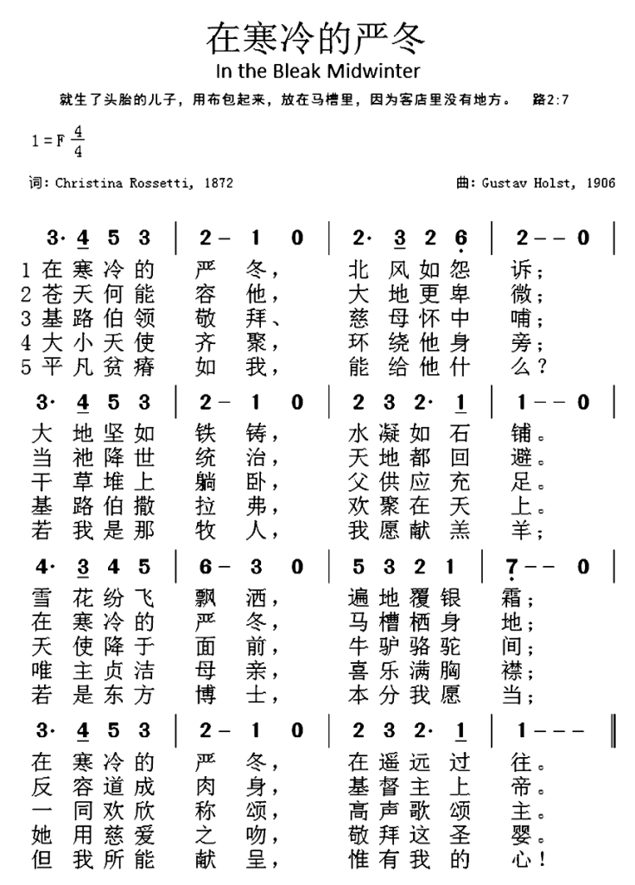

|
|
嚴冬懷主歌 |
|
1 In the bleak midwinter, frosty wind made moan,
earth stood hard as iron, water like a stone;
snow had fallen, snow on snow, snow on snow,
in the bleak midwinter, long ago.
2 Our God, heaven cannot hold him, nor earth sustain;
heaven and earth shall flee away when he comes to reign.
In the bleak midwinter a stable place sufficed
the Lord God Almighty, Jesus Christ.
3 Angels and archangels may have gathered there,
cherubim and seraphim thronged the air;
but his mother only, in her maiden bliss,
worshiped the beloved with a kiss.
4 What can I give him, poor as I am?
If I were a shepherd, I would bring a lamb;
if I were a Wise Man, I would do my part;
yet what I can I give him: give my heart.
United Methodist Hymnal, 1989
|
1. 在寒冷嚴冬�堙A凜風如怨訴，
大地堅如鐵鑄，凝冰像石鋪；
雪花紛紜雪上雪，蓋地又蔽天，
在寒冷嚴冬�堙A遠遠在當年。
2. 蒼天何能容祂，大地更卑微，
當祂降世統治，天地都迴避；
在寒冷的嚴冬�堙A馬槽棲身地，
反容道成肉身，基督主上帝。
3. 天使與眾天軍，排列在上方，
基路伯撒拉弗，環立在身旁；
惟有主貞潔母親，喜樂滿胸襟，
她用慈祥輕吻，來崇拜聖嬰。
4. 像我如此貧乏，無物可獻上，
我若是個牧人，我願獻小羊；
我若是東方博士，本分我當盡，
但我所能獻呈，祇有我的心。
|

https://medium.com/@esmond07/%E5%9A%B4%E5%86%AC%E6%87%B7%E4%B8%BB%E6%AD%8C-de55f91efd29
 |
| |
|
https://www.patreon.com/posts/yin-le-fen-xiang-45882359
音樂分享_《嚴冬懷主歌》介紹
https://www.youtube.com/watch?v=I7_5AboTbVc
《嚴冬懷主歌》是一首經典聖詩，曾被收納於多本聖詩集。音樂由創作交響樂《行星組曲》（The Planets）的英國作曲家Gustav. T.
Holst（1874–1934）所創作。
生於音樂世家，Holst自小已經顯示出他的音樂才能，父親亦想栽培他成為鋼琴家。可惜Holst自小體弱多病，不只患有哮喘而且視力不好，後來即使考入皇家音樂學院，也因為右手的神經炎而被迫放棄。可能因為身體經年被疾病傷患纏繞，Holst的性格比較內向害羞。可是，天生的障礙與性格，亦無阻Holst最後成為一位出色的作曲家與長號（trombone）老師。
《嚴冬懷主歌》是一首聖誕聖詩，寫詞的是一位早年患上抑鬱症的天才女作家Christina Rossetti，她用很獨特的視覺來言說聖誕故事──接近完全沒有提到耶穌。
一開始，這首聖詩所鋪陳的境像與氣氛，就有別於一般充滿喜悅、溫馨的「聖誕歌」。雖然我們都知道，耶穌降生的時候未必是冬天，但這首聖詩也順應傳統，借冬天的情境，描述基督降生時冬風颯颯的蕭瑟意象。
第二、三節，詩人慢慢將我們引入耶穌誕生的那一個安靜但淒清的晚上。或許震懾天地的天使之歌，都比不上馬利亞在嬰孩耶穌輕輕一吻更為隽永。
雖然聖經記載，耶穌降生時「大隊天兵同那天使讚美神說：『在至高之處榮耀歸與神！在地上平安歸與他所喜悅的人！』」（路加福音
2:13–14）但是，今天我們都未能像牧羊人一般，有幸再見到這個榮耀的「天使的音樂會」，但詩歌提醒我們，基督降生，不是為了來延續光環，而是來教我們學習耶穌的謙卑。
「但我所得所有，只真心這片。」
相信Holst亦將自己的經歷投射在詩歌之中，我們引以為傲的事情、才能，可能有一天不再擁有，但唯有順服上主的召命，甘於平凡，忠於自己，總有可為主獻上的東西！
邀請大家一同唱第四節，向上主獻上我們的最真摰的心意。
https://choirdb.hk/product/%E5%9A%B4%E5%86%AC%E6%87%B7%E4%B8%BB%E6%AD%8C-in-the-bleak-midwinter-%E6%9C%83%E7%9C%BE%E8%A9%A9/
由 Gustav. T. Holst
所作，是十分經典的曲目，曾被收納於多本聖詩集中的歌曲，今由梁臻階配上了貼切的粵詞。四節的詩歌，講述耶穌降生的不同情景，十分有詩意。
編者以四部無伴奏的方式編曲，特別花了 心思於一些音樂跟文字色彩的配合(Word Painting)，例如於開始時，唱
述「北風呼號吹」的時候，女聲在模仿風聲；於「雪落似花飄盪」一句，以女聲及男高(Bass Tacet)，以單薄和聲慢慢散落，後尾男低音加入時，以抑壓聲(Sotto
Voce)唱出「輕飄盪」，營造飄雪降地的詩意，
後面再有「萬馬千軍」等等很形象化的內容，編者都發揮了音樂形影的作用，歌者或指揮應多多留意。歌曲中的動態(Dynamics)亦是編排中的重點，不應忽略。
https://www.youtube.com/watch?v=xAzQIS4-MpY
In the bleak midwinter Frosty wind made moan
Earth stood hard as iron Water like a stone
Snow had fallen Snow on snow on snow
In the bleak midwinter Long, long ago
Angels and Arc Angels May have traveled there
Cherubim and Seraphim Thronged the air
But only his Mother In her maiden bliss
Worshiped the beloved With a kiss
What can I give him? Poor as I am
If I were a shepherd I would give a lamb
If I were a wise man I would do my part
But what I can I give him Give him my heart
Give him my heart
中文翻譯是
在冷冬的深處，北風呼號吹；
地變枯乾荒野，海中水似鐵。
雪落似花飄盪：輕飄盪；
在這千百年來，冷冬深遠裡。
Verse 2
萬里高天廣闊，數千尺地土；
地與天必消去，救主將快到。
正在那個冬夜，孤苦夜；
住處只得咫尺，救主小馬廏。
Verse 3
萬馬千軍歡唱，眾天兵列隊！
或有諸般天使，充塞空氣裡。
馬利亞卻親述尊主頌；
頌語千般歸予輕輕一吻裡。
Verse 4
沒有身家千貫，我可獻甚麼？
若這身是牧人，我必獻羊群。
我若有小聰穎，必供奉。
但我所得所有，只真心這片。
作者生平
羅塞蒂出生在倫敦一個義大利家庭，家中充滿藝術氣息。她的爸爸是一個義大利移民，是一位但丁研究學者。她的兩個哥哥，但丁和威廉幫助成立了著名的藝術團體“前拉斐爾派”（Pre-Raphaelite
Brotherhood），而羅塞蒂有時成為他們畫作的模特。從小被信奉英國國教的媽媽實行在家教育，出於對教義的忠心，羅塞蒂拒絕了兩次婚姻介紹，並且終生單身。她忠於她的家庭和信仰，服侍從前做過妓女的人群，與（英國）基督教知識促進會（Society
for Promoting Christian Knowledge）服事，同時也作為詩人滋養著自己朝氣蓬勃的內心生活。
她的哥哥形容羅塞蒂“富有自我延遲精神”，這個評論很有名。和美國一個很相似的人物，艾米莉·狄金森（Emily
Dickinson，1830–1886)一樣，羅塞蒂幽閉、過分規矩的未婚老姑娘形象被她強烈的詩情所掩蓋。吊詭的是，正如《牛津英文文學選集》（The Oxford
Anthology of English
Literature）觀察的那樣，羅塞蒂“古怪的文學思維開創了祈禱詩的先河，這在歷史上是令人震驚的。因為祈禱詩起到解放自我意識的作用——而這後來發生在19世紀”。這本文集認為羅塞蒂是“20世紀之前除了狄金森之外，英文詩人中最優秀的一位女性詩人”。
儘管表面上羅塞蒂可以自我排解，但她也切身體會到自己的犧牲：在她哥哥面前的黯然失色、追求者的不合適、身體的疾病……但她願意選擇接受這苦杯。下面是1888年她給她哥哥寫的一段深刻的話：
你和你常去的世界是美麗、可愛、高貴、令人難忘的，然而我卻深深滿足於我陰暗的縫隙——這縫隙享受著它的獨特地勢，也是那個地方賦予我的特別學問。
羅塞蒂生命的矛盾在於她的自我延遲精神產生了一些最好的基督教詩作——這是她自己的禮物，獻給了她的救主，也被這世界收到。
歌詞分析
這首詩中鮮明的言語，掩飾了詩中強烈、複雜的畫面和感受。確實如此，表面看上去這首詩好像很簡單，但它的核心卻有著深刻的矛盾。簡單的大地相關元素——寒風、冰水、雪花、乾草的平鋪直敘，以及道成肉身的難以言狀道出了耶誕節的關鍵：全能的神謙卑虛己、道成肉身，上帝與我們同在。和羅塞蒂作品的主體一致，這首詩中大自然的物質世界揭示了超乎尋常的屬靈事實。因此，母親馬利亞簡單的一吻就是對這位真神的敬拜之舉。
簡單的文字與洪亮的旋律和聲音相呼應，襯托出這首詩傳達的卓越神學洞見。即便這首詩沒有調用基督降生時的伯利�痝黥滿A反倒使用白雪覆蓋的維多利亞聖誕時節場景來普及基督降生，它仍然忠於聖經經文。“蒼天何能容他，大地更卑微”重申了列王紀上8:27“上帝果真住在地上嗎？看哪，天和天上的天，尚且不足你居住的，何況我所建的這殿呢？”啟示錄20:11預言的異象也呈現在詩句“當祂降世統治，天地都回避”中。最重要的是這個聖經真理：我們能給基督最重要的東西，世上最貧窮的人也擁有。
學者謝恩·海蒂（Chene Heady）在雜誌《宗教與藝術》（Religion and the
Arts）中給羅塞蒂晚年的詩寫評論文章時，描述了羅塞蒂虔誠的詩句如何“給失去魅力的世界恢復魅力”。羅塞蒂的基督觀形成于英國國教傳統禮儀，在她的觀念中，“所有現存的一切都是一個漫長的基督將臨節”。海蒂解釋到，我們的地上景況都是“沒有意義的”，若要獲得“意義......唯有通過信心的眼睛”（以上摘錄出自謝恩·海蒂的《國教祈禱書的世界：禮儀時代和詩中的返魅傾向，1827-1935》——譯注）。物質的東西，像《在寒冷的嚴冬》中描繪的景象是屬靈事實的標誌。所以，羅塞蒂的詩像耶穌的比喻那樣：“其實十分複雜，但對那些沒抓住重點的聽眾好像很簡單”。
內心的啟發
在喧囂的聖誕歌曲中，照受詩歌給人雋永與寧靜的感受，宛如上帝美好的聖誕禮物！
嚴冬懷主歌 In the Bleak Midwinter -
點解聖詩講座頌唱會(七)「聖詩故事(上)
https://youtu.be/I7_5AboTbVc
https://lk15912.blogspot.com/2021/12/in-bleak-midwinter.html
《嚴冬懷主歌》是一首經典聖詩，曾被收納於多本聖詩集。音樂由創作交響樂《行星組曲》（The Planets）的英國作曲家Gustav. T.
Holst（1874-1934）所創作。
生於音樂世家，Holst自小已經顯示出他的音樂才能，父親亦想栽培他成為鋼琴家。可惜Holst自小體弱多病，不只患有哮喘而且視力不好，後來即使考入皇家音樂學院，也因為右手的神經炎而被迫放棄。可能因為身體經年被疾病傷患纏繞，Holst的性格比較內向害羞。可是，天生的障礙與性格，亦無阻Holst最後成為一位出色的作曲家與長號（trombone）老師。
《嚴冬懷主歌》是一首聖誕聖詩，寫詞的是一位早年患上抑鬱症的天才女作家Christina
Rossetti，她用很獨特的視覺來言說聖誕故事──接近完全沒有提到耶穌。
一開始，這首聖詩所鋪陳的境像與氣氛，就有別於一般充滿喜悅、溫馨的「聖誕歌」。雖然我們都知道，耶穌降生的時候未必是冬天，但這首聖詩也順應傳統，借冬天的情境，描述基督降生時冬風颯颯的蕭瑟意象。
第二、三節，詩人慢慢將我們引入耶穌誕生的那一個安靜但淒清的晚上。或許震懾天地的天使之歌，都比不上馬利亞在嬰孩耶穌輕輕一吻更為隽永。
雖然聖經記載，耶穌降生時「大隊天兵同那天使讚美神說：『在至高之處榮耀歸與神！在地上平安歸與他所喜悅的人！』」（路加福音
2:13-14）但是，今天我們都未能像牧羊人一般，有幸再見到這個榮耀的「天使的音樂會」，但詩歌提醒我們，基督降生，不是為來延續光環，而是來教我們學習耶穌的謙卑。
「但我所得所有，只真心這片。」
相信Holst亦將自己的經歷投射在詩歌之中，我們引以為傲的事情、才能，可能有一天不再擁有，但唯有順服上主的召命，甘於平凡，忠於自己，總有可為主獻上的東西！
詩班指揮認爲它是最好的聖誕頌歌。許多音樂家爲它灌製唱片，從國王學院唱詩班（Choir
of King’s College）到安妮·藍妮克絲（Annie
Lennox），再到詹姆斯·泰勒（James
Taylor）。這首歌最初定名爲《一首聖誕歡歌》（A Christmas Carol），後來被世人熟知的《在寒冷的嚴冬》（In the Bleak
Midwinter），是由克里斯蒂娜·羅塞蒂（Christina Rossetti）（1830–1894）所寫，並於1872年在美國雜誌《史氏月刊》（Scribner’s
Monthly）首次發表。這首詩直到1906年，也就是羅塞蒂去世12年後，才被譜上曲，並收錄在《英文讚美詩》（The
English Hymnal）中。
一生未嫁的羅塞蒂被一些評論家形容爲「藝術的修女」，她一直把自己投身在兩種似乎相對立的力量中：深深的基督教信念和豐富的藝術情感。這兩股力量同時滲入到《在寒冷的嚴冬》這首詩歌中：

似是而非的簡單
這首詩中鮮明的言語，掩飾了詩中強烈、複雜的畫面和感受。確實如此，表面看上去這首詩好像很簡單，但它的核心卻有著深刻的矛盾。簡單的大地相關元素——寒風、冰水、雪花、乾草的平鋪直敘，以及道成肉身的難以言狀道出了聖誕節的關鍵：全能的神謙卑虛己、道成肉身，神與我們同在。和羅塞蒂作品的主體一致，這首詩中大自然的物質世界揭示了超乎尋常的屬靈事實。因此，母親馬利亞簡單的一吻就是對這位真神的敬拜之舉。
簡單的文字與洪亮的旋律和聲音相呼應，襯托出這首詩傳達的卓越神學洞見。即便這首詩沒有調用基督降生時的伯利恆場景，反倒使用白雪覆蓋的維多利亞聖誕時節場景來普及基督降生，它仍然忠於聖經經文。「蒼天何能容他，大地更卑微」重申了列王紀上8:27「神果真住在地上嗎？看哪，天和天上的天，尚且不足你居住的，何況我所建的這殿呢？」啓示錄20:11預言的異象也呈現在詩句「當祂降世統治，天地都回避」中。最重要的是這個聖經真理：我們能給基督最重要的東西，世上最貧窮的人也擁有。
學者謝恩·海蒂（Chene Heady）在雜誌《宗教與藝術》（Religion
and the Arts）中給羅塞蒂晚年的詩寫評論文章時，描述了羅塞蒂虔誠的詩句如何「給失去魅力的世界恢復魅力」。羅塞蒂的基督觀形成於英國國教傳統禮儀，在她的觀念中，「所有現存的一切都是一個漫長的基督將臨節」。海蒂解釋到，我們的地上景況都是「沒有意義的」，若要獲得「意義......唯有通過信心的眼睛」（以上摘錄出自謝恩·海蒂的《國教祈禱書的世界：禮儀時代和詩中的返魅傾向，1827-1935》——譯註）。物質的東西，像《在寒冷的嚴冬》中描繪的景象是屬靈事實的標誌。所以，羅塞蒂的詩像耶穌的比喻那樣：「其實十分複雜，但對那些沒抓住重點的聽眾好像很簡單」。
自我延遲（Self-Postponement）精神
《在寒冷的嚴冬》的特別限制使得這首詩的意義能夠爆發出來，同樣，詩人的一生也是如此。
 羅塞蒂出生在倫敦一個意大利家庭，家中充滿藝術氣息。她的爸爸是一個意大利移民，是一位但丁研究學者。她的兩個哥哥，但丁和威廉幫助成立了著名的藝術團體「前拉斐爾派」（Pre-Raphaelite
Brotherhood），而羅塞蒂有時成爲他們畫作的模特。從小被信奉英國國教的媽媽實行在家教育，出於對教義的忠心，羅塞蒂拒絕了兩次婚姻介紹，並且終生單身。她忠於她的家庭和信仰，服侍從前做過妓女的人群，與（英國）基督教知識促進會（Society
for Promoting Christian Knowledge）服事，同時也作爲詩人滋養著自己朝氣蓬勃的內心生活。
羅塞蒂出生在倫敦一個意大利家庭，家中充滿藝術氣息。她的爸爸是一個意大利移民，是一位但丁研究學者。她的兩個哥哥，但丁和威廉幫助成立了著名的藝術團體「前拉斐爾派」（Pre-Raphaelite
Brotherhood），而羅塞蒂有時成爲他們畫作的模特。從小被信奉英國國教的媽媽實行在家教育，出於對教義的忠心，羅塞蒂拒絕了兩次婚姻介紹，並且終生單身。她忠於她的家庭和信仰，服侍從前做過妓女的人群，與（英國）基督教知識促進會（Society
for Promoting Christian Knowledge）服事，同時也作爲詩人滋養著自己朝氣蓬勃的內心生活。
她的哥哥形容羅塞蒂「富有自我延遲精神」，這個評論很有名。和美國一個很相似的人物，艾米莉·狄金森（Emily
Dickinson，1830–1886)一樣，羅塞蒂幽閉、過分規矩的未婚老姑娘形像被她強烈的詩情所掩蓋。弔詭的是，正如《牛津英文文學選集》（The
Oxford Anthology of English Literature）觀察的那樣，羅塞蒂「古怪的文學思維開創了祈禱詩的先河，這在歷史上是令人震驚的。因爲祈禱詩起到解放自我意識的作用——而這後來發生在19世紀」。這本文集認爲羅塞蒂是「20世紀之前除了狄金森之外，英文詩人中最優秀的一位女性詩人」。
儘管表面上羅塞蒂可以自我排解，但她也切身體會到自己的犧牲：在她哥哥面前的黯然失色、追求者的不合適、身體的疾病……但她願意選擇接受這苦杯。下面是1888年她給她哥哥寫的一段深刻的話：
你和你常去的世界是美麗、可愛、高貴、令人難忘的，然而我卻深深滿足於我陰暗的縫隙——這縫隙享受著它的獨特地勢，也是那個地方賦予我的特別學問。
羅塞蒂生命的矛盾在於她的自我延遲精神產生了一些最好的基督教詩作——這是她自己的禮物，獻給了她的救主，也被這世界收到。
https://tc.tgcchinese.org/article/the-remarkable-woman-behind-in-the-bleak-midwinter
https://hymnary.org/text/in_the_bleak_midwinter
Though we do not know the time of year when Jesus was actually born, we do know
that Israel, at any time of year, was not the windy, frozen scene the opening
stanza of this hymn depicts. Nevertheless, the world was not a friendly place
for Jesus even though the thermometer was above freezing. The middle stanzas
describe the contrast between the glory of heaven from which Jesus came and the
poor reality of the earth He came to save. The final stanza is a commitment
that, in recognition of that sacrifice, we will devote ourselves to God.
ext:
The January 1872 edition of Scribner's Monthly was the first
publication of Christina Rossetti's poem “A Christmas Carol.” The poem was later
titled “In the Bleak Midwinter” after the opening line and published as a hymn
in the English Hymnal in 1906. The full text has five stanzas, but
the original third stanza (beginning “Enough for him”) is often omitted, and a
few hymnals use the final stanza alone, titled “What Can I Give Him?”

As many other artists have done, Rossetti depicted the birth of Christ as taking
place in a frozen, snowy English winter instead of the milder climate of
Palestine where He was actually born. Despite the historical inaccuracy, her
text effectively communicates the vast difference between the glory of heaven
from which Jesus came and the reality of discomfort on earth, where He would
eventually be crucified. The final stanza asks for an appropriate response to
Christ's sacrifice of glory, and the answer is “give [him] my heart.”
Tune:
The only tune to which the complete hymn is sung is CRANHAM by a well-known
English composer, Gustav Holst, who composed it for this text. (“What Can I Give
Him?” is sometimes sung to another tune.) With a mood well-suited to the text,
CRANHAM was first published in the English Hymnal in 1906.

The irregular meter of the text presents difficulties in fitting it to a tune.
Holst's melody can be adapted to extra syllables by adding a pickup note to a
phrase or dividing the long penultimate note of each phrase. A clear indication
from the leader or choir on the placement of syllables should facilitate
congregational singing. The tune is best sung in harmony.
When/Why/How:
This hymn is sung at Christmas. Because of the irregularity of the text and the
fact that it is only sung once a year, it may be best to have the choir sing it.
Robert Kreutz has set "In
the Bleak Midwinter" to original music in an a capella rendition. Using
CRANHAM, this simple choral setting of "In
the Bleak Midwinter" is for two-part choir and piano, with optional
handbells. A rhythmically fresh treatment of the tune is a feature of this
choral arrangement of "In
the Bleak Midwinter." If it is desired that the congregation sing the hymn,
try using an instrumental setting of CRANHAM as a prelude or offertory during
the week or two before, so that they will at least be familiar with the tune. "Let
Heaven and Nature Sing" has an easy setting for solo piano, while "I
Heard the Bells on Christmas Day" includes an arrangement for organ. For
handbells, there is a graceful, expressive setting of "In
the Bleak Midwinter."
Tiffany Shomsky,
Hymnary.org
https://www.classicfm.com/discover-music/occasions/christmas/in-the-bleak-midwinter-lyrics-song-carol-peaky/


Edmund Burne-Jones. The
Nativity.
Epiphany Chapel, Winchester Cathedral.
https://www.umcdiscipleship.org/resources/history-of-hymns-in-the-bleak-midwinter
BY C. MICHAEL HAWN
"In the Bleak Midwinter"
Christina Rossetti
The United Methodist Hymnal, No. 221
Christina Rossetti
In the bleak midwinter,
Frosty wind made moan,
Earth stood hard as iron,
Water like a stone;
Snow had fallen, snow on snow,
Snow on snow,
In the bleak midwinter,
Long ago.
Christina Georgiana Rossetti (1830-1894) gives us one of the most beloved
Christmas hymns. The author of three collections of mostly religious poetry and
four devotional books, she came from a family steeped in the arts. Her deep
faith is thought to be partially the result of the solace that she found in
writing as a result of her poor health from age sixteen.
Christina’s father, Gabriele Rossetti, was a professor of Italian at
King’s College, London, living in exile in England. Her brothers Dante Gabriel
and William Michael gave birth to a nineteenth-century art movement, the
Pre-Raphaelites, for which the beautiful Christina often served as a model (see
the photo), especially for portraits of the Madonna. Among the family friends
was Charles Dodgson, who, under the pseudonym of Lewis Carroll, authored the
famous Alice in Wonderland. An ardent Anglican, Christina rejected one suitor
because he was Roman Catholic.
Her most famous hymns are the Christmas texts, "Love Came Down at
Christmas" composed in 1885 (UM Hymnal No. 242) and "In the Bleak Midwinter,"
the latter first published as the poem "A Christmas Carol" in Scribner’s Monthly
in January 1872. It first appeared as a hymn in The English Hymnal (1906), where
it was paired to a tune by the famous English composer Gustav Holst (1874-1934).
Now, over 100 years later, we sing this hymn in virtually the same form as it
appeared in 1906.
In the first memorable stanza,
Rossetti creates a dreary and desolate image of the world into which the infant
Jesus appeared by drawing on the experience of a British winter. She is not
suggesting that it literally snowed in Bethlehem, but is drawing on a
long-established literary idea of associating snow with Christ's birth. The
famous seventeenth-century poet, John Milton, used the winter imagery in his
poem, "On the Morning of Christ’s Nativity," as a pure covering to hide the sin
of the world.
It was the Winter wilde,
While the Heav'n-born-childe,
All meanly wrapt in the rude manger lies;
Nature in aw to him
Had doff't her gawdy trim . . .
Rossetti exploits this metaphor in the opposite way in her opening
stanza. The Incarnate One, the Light of the World, brought warmth into the most
forlorn and dreary of sinful situations.
The second stanza
uses the device of antithesis to make the point that the eternal One whom
"heaven could not hold" nor "earth sustain" appeared during the "bleak winter"
of human existence where "a stable place sufficed." This paradox of the eternal
One born in a humble setting is a primary theme of many hymns of this season.
An omitted third stanza
explores the intimacy of the manger scene.
Enough for him, whom cherubim
Worship night and day,
A breastful of milk,
And a mangerful of hay;
Enough for him, whom angels
Fall down before,
The ox and ass and camel
Which adore.
The fourth stanza once again contrasts the heavenly glory of gathered
"Angels and archangels" and "cherubim and seraphim" with the mother who alone
"worshiped the beloved with a kiss."
The final stanza
is perhaps one of the most endearing to singers of Christmas hymns. Yet, as
British hymnologist J. R. Watson observes, "The final verse is strangely
interesting."
What can I give him,
Poor as I am?
If I were a shepherd,
I would bring a lamb;
If I were a wise man,
I would do my part;
Yet what I can I give him;
Give my heart.
Watson cites an article by British hymn writer Elizabeth Cosnett (b.
1936) who provides a social commentary that may shed light on this stanza. She
notes that, "when a woman wrote these words women were largely excluded from the
professions and from higher education." Like the shepherds, she was not
employed; like the wise men, Rossetti held no degree. Watson concludes that this
reading of the final stanza "does not invalidate the more general reading of the
verse; but it gives a special sharpness and poignancy to the last verse for
those who wish to find it."
The writer invites us to offer our own gift to the Christ Child just as
the shepherds and wise men did. Rather than the present of a lamb or expensive
gifts, however, we offer the most important gift -- our hearts.
Dr. Hawn is distinguished professor of church music at Perkins School of
Theology. He is also director of the seminary's sacred music program.
https://en.wikipedia.org/wiki/In_the_Bleak_Midwinter
From Wikipedia, the free encyclopedia
"In the Bleak Midwinter" is a poem by
the English poet Christina
Rossetti, commonly performed as a Christmas
carol. The poem was published, under the title "A Christmas Carol",
in the January 1872 issue of Scribner's
Monthly,[1][2] and
was first collected in book form in Goblin Market, The Prince's
Progress and Other Poems (Macmillan, 1875).
In 1906, the composer Gustav
Holst composed a setting of Rossetti's words (titled "Cranham") in The
English Hymnal which is sung throughout the world.[3] An
anthem setting by Harold
Darke composed in 1909 is also widely performed by choirs, and was
named the best Christmas carol in a poll of some of the world's leading choirmasters and
choral experts in 2008.[4]

As first published in Scribner's Monthly (January 1872)
In the bleak mid-winter
Frosty wind made moan;
Earth stood hard as iron,
Water like a stone;
Snow had fallen, snow on snow,
Snow on snow,
In the bleak mid-winter
Long ago.
Our God, heaven cannot hold Him
Nor earth sustain,
Heaven and earth shall flee away
When He comes to reign:
In the bleak mid-winter
A stable-place sufficed
The Lord God Almighty —
Jesus Christ.
Enough for Him, whom cherubim
Worship night and day,
A breastful of milk
And a mangerful of hay;
Enough for Him, whom Angels
Fall down before,
The ox and ass and camel
Which adore.
Angels and Archangels
May have gathered there,
Cherubim and seraphim
Thronged the air;
But only His Mother
In her maiden bliss
Worshipped the Beloved
With a kiss.
What can I give Him,
Poor as I am? —
If I were a Shepherd
I would bring a lamb;
If I were a Wise Man
I would do my part, —
Yet what I can I give Him, —
Give my heart.
Analysis[edit]
In verse one, Rossetti describes the
physical circumstances of the Incarnation in Bethlehem.
In verse two, Rossetti contrasts Christ's
first and second
coming. The third verse dwells on Christ's birth and describes the
simple surroundings, in a humble stable and watched by beasts of burden.
Rossetti achieves another contrast in the fourth verse, this time between
the incorporeal angels
attendant at Christ's birth with Mary's
ability to render Jesus physical affection. The final verse shifts the
description to a more introspective thought process.
Hymnologist and theologian Ian
Bradley has questioned the poem's theology: "Is it right to say that
heaven cannot hold God, nor the earth sustain, and what about heaven and
earth fleeing away when he comes to reign?"[5]
Settings[edit]
The text of this Christmas poem has been set
to music many times. Two of the most famous settings were composed by Gustav
Holst and Harold
Darke in the early 20th century.

"Cranham", by Gustav Holst
Musical scores are temporarily disabled.
|
|
"In the Bleak Midwinter" arranged for congregational singing
|
Problems playing this file? See media
help. |
Holst's setting, Cranham, is a hymn
tune setting suitable for congregational singing, since the poem is
irregular in metre and any setting of it requires a skilful and adaptable
tune. The hymn is titled after Cranham,
Gloucestershire and was written for the English
Hymnal of 1906.[6][3]
Musical scores are temporarily disabled.
|
|
"In the Bleak Midwinter" arranged for choir
|
Problems playing this file? See media
help. |
The Darke setting,
was written in 1909 while he was a student at the Royal
College of Music. Although melodically similar, it is more advanced;
each verse is treated slightly differently, with solos for soprano and
tenor (or a group of sopranos and tenors) and a delicate organ
accompaniment.[5] This
version is favoured by cathedral choirs and is the one usually heard
performed on the radio broadcasts of Nine
Lessons and Carols by the King's
College Choir. Darke served as conductor of the choir during World
War II.[7] Darke
omits verse four of Rossetti's original, and bowdlerizes Rossetti's
"a breastful of milk" to "a heart full of mirth",[8] although
later editions reversed this change. Darke also repeats the last line of
the final verse. Darke would complain, however, that the popularity of
this tune prevented people from performing his other compositions, and
rarely performed it outside of Christmas services.[9]
The Darke setting was used in Jacob
Collier's rearrangement of the song,[10] which
was released on YouTube on 14 December 2016. The rearrangement by Collier
features contemporary compositional techniques such as microtonality.
Other settings[edit]
Benjamin Britten includes an elaborate five-part setting of the first
verse for high voices (combined with the medieval Corpus
Christi Carol) in his work A
Boy was Born.
Other settings include those by Robert C L
Watson, Bruce
Montgomery, Bob
Chilcott, Michael John Trotta,[11] Robert
Walker,[12] Eric
Thiman, who wrote a setting for solo voice and piano, and Leonard
Lehrman.[13]
In popular culture[edit]
It is quoted throughout the Peaky
Blinders TV series.[14][15] In The
Crown season 1 premiere it makes an appearance.[16][17]
https://en.wikipedia.org/wiki/Christina_Rossetti
From Wikipedia, the free encyclopedia
|
Christina Rossetti
|
 |
|
Born |
Christina Georgina Rossetti
5 December 1830
London, England |
|
Died |
29 December 1894 (aged 64)
London, England |
|
Occupation |
Poet |
|
Language |
English |
|
Nationality |
British |
|
Literary movement |
Pre-Raphaelite |
|
Parents |
|
|
Relatives |
|
Christina Georgina Rossetti (5
December 1830 – 29 December 1894) was an English poet who wrote romantic,
devotional and children's poems, including "Goblin
Market" and "Remember". She also wrote the words of two Christmas
carols well known in the UK: "In
the Bleak Midwinter", later set by Gustav
Holst and Harold
Darke, and "Love
Came Down at Christmas", also set by Darke and other composers. She
was a sister of the artist and poet Dante
Gabriel Rossetti and features in several of his paintings.
Early life and
education[edit]
Christina Rossetti was born in Charlotte
Street (now Hallam
Street), London, to Gabriele
Rossetti, a poet and a political exile from Vasto,
Abruzzo, since 1824 and Frances
Polidori, the sister of Lord
Byron's friend and physician, John
William Polidori.[1] She
had two brothers and a sister: Dante
Gabriel became an influential artist and poet, and William
Michael and Maria both
became writers.[1] Christina,
the youngest, was a lively child. She dictated her first story to her
mother before she had learned to write.[2][3]
Rossetti was educated at home by her mother
and father, who had her study religious works, classics, fairy tales and
novels. Rossetti delighted in the works of Keats, Scott, Ann
Radcliffe and Matthew
Lewis.[4] The
influence of the work of Dante
Alighieri, Petrarch and other Italian writers filled the home and
deeply impacted Rossetti's later writing. Their home was open to visiting
Italian scholars, artists and revolutionaries.[3] The
family homes in Bloomsbury at
38 and later 50 Charlotte
Street were within easy reach of Madam
Tussauds, London Zoo and the newly opened Regent's
Park, which she visited regularly; in contrast to her parents,
Rossetti was very much a London child, and, it seems, a happy one.[3][4]
In the 1840s, her family faced severe
financial difficulties due to the deterioration of her father's physical
and mental health. In 1843, he was diagnosed with persistent bronchitis,
possibly tuberculosis, and faced losing his sight. He gave up his teaching
post at King's College and though he lived another 11 years, he suffered
from depression and was never physically well again. Rossetti's mother
began teaching to keep the family out of poverty and Maria became a
live-in governess, a prospect that Christina Rossetti dreaded. At this
time her brother William was working for the Excise Office and Gabriel was
at art school, leaving Christina's life at home to become one of
increasing isolation.[5] When
she was 14, Rossetti suffered a nervous breakdown and left school. Bouts
of depression and
related illness followed. During this period she, her mother and her
sister became absorbed in the Anglo-Catholic movement
that developed in the Church
of England. Religious devotion came to play a major role in Rossetti's
life.
In her late teens, Rossetti became engaged
to the painter James
Collinson, the first of three suitors. He, like her brothers Dante and
William, was a founding member of the avant-garde Pre-Raphaelite
Brotherhood, founded in 1848.[6] The
engagement was broken in 1850 when he reverted to Catholicism.
In 1853, when the Rossetti family was in continuing financial
difficulties, Christina helped her mother keep a school in Fromefield, Frome,
but it did not succeed. A plaque commemorates the house.[7] In
1854 the pair returned to London, where Christina's father died.[8] She
later became involved with the linguist Charles
Cayley, but declined to marry him, also for religious reasons.[6] The
third offer came from the painter John
Brett, whom she likewise refused.[3]
Rossetti sat for several of Dante Gabriel
Rossetti's best-known paintings. In 1848, she sat for the Virgin Mary in
his first completed oil painting, The Girlhood of Mary Virgin, and
the first work he inscribed with the initials "PRB", later revealed to
mark the Pre-Raphaelite
Brotherhood.[9] The
following year she modelled for his depiction of the Annunciation, Ecce
Ancilla Domini. A line from her poem "Who shall deliver me?"
inspired a famous painting by Fernand
Khnopff called I lock my door upon myself. In 1849 she became
seriously ill again with depression, and sometime around 1857 had a major
religious crisis.[3]
Rossetti began writing down and dating her
poems from 1842, most of which imitated her favoured poets. In 1847 she
began experimenting with verse forms such as sonnets,
hymns and ballads,
while drawing narratives from the Bible, folk tales and the lives of
saints. Her early pieces often feature meditations on death and loss, in
the Romantic tradition.[4] Her
first two poems published were "Death's Chill Between" and "Heart's Chill
Between", in the Athenaeum in
1848, when she was 18.[10][11] She
used the pseudonym "Ellen Alleyne" in the literary magazine, The
Germ, published by the Pre-Raphaelites from January to April 1850
and edited by her brother William.[1] This
marked the beginning of her public career.[12]
Rossetti's more critical reflections on the
artistic movement begun by her brother find expression in her 1856 poem
"In the Artist's Studio". Here she reflects on seeing multiple paintings
of the same model. For Rossetti, the artist's idealised vision of the
model's character begins to overwhelm his work, until "every canvas
means/the one same meaning."[13] Dinah
Roe, in her introduction to the Penguin Classics collection of
Pre-Raphaelite poetry, argues that this critique of her brother and
similar male artists is less about "the objectification of women" as about
"the male artist's self-worship".[14]
Rossetti's most famous collection, Goblin
Market and Other Poems, appeared in 1862, when she was 31. It
received widespread critical praise, establishing her as the foremost
female poet of the time. Hopkins, Swinburne and Tennyson lauded
her,[12] and
with the death of Elizabeth
Barrett Browning in 1861 she was hailed as her natural successor.[12] The
title poem is one of Rossetti's best known. Although it is ostensibly
about two sisters' misadventures with goblins, critics have interpreted
the piece in a variety of ways, seeing it as an allegory about temptation
and salvation, a commentary on Victorian gender
roles and female agency, and a work about erotic desire and social
redemption. Rossetti was a volunteer worker from 1859 to 1870 at the St
Mary Magdalene house of charity in Highgate,
a refuge for former prostitutes, and it is suggested that Goblin Market may
have been inspired by the "fallen women" she came to know.[15] There
are parallels with Coleridge's The
Rime of the Ancient Mariner in both poems' religious themes of
temptation, sin and redemption by vicarious suffering.[16] Swinburne in
1883 dedicated A Century of Roundels to Rossetti, as she adopted
his roundel form
in a number of poems, for instance in Wife to Husband.[17] She
was ambivalent about women's
suffrage, but many scholars have found feminist themes
in her poetry.[18] She
opposed slavery
in the United States, cruelty
to animals (in the prevalent practice of animal
experimentation), and the exploitation of
girls in under-age prostitution.[19]
Rossetti maintained a large circle of
friends and correspondents, and continued to write and publish for the
rest of her life, focusing mainly on devotional writing and children's
poetry. In 1892, she wrote The Face of the Deep, a book of
devotional prose, and oversaw production of a new and enlarged edition of Sing-Song in
1893.[20]

Grave of Christina Rossetti in Highgate Cemetery (West side)
Later life[edit]
Song
When I am dead, my dearest,
Sing no sad songs for me;
Plant thou no roses at my head,
Nor shady cypress tree:
Be the green grass above me
With showers and dewdrops wet:
And if thou wilt, remember,
And if thou wilt, forget.
I shall not see the shadows,
I shall not feel the rain;
I shall not hear the nightingale
Sing on as if in pain:
And dreaming through the twilight
That doth not rise nor set,
Haply I may remember,
And haply may forget.
1862[21]
In the later decades of her life, Rossetti
suffered from a type of hyperthyroidism – Graves'
disease – diagnosed in 1872, suffering a near-fatal attack in the
early 1870s.[1][3] In
1893, she developed breast cancer. The tumour was removed, but there was a
recurrence in September 1894.[22]
She died on 29 December 1894 and was buried
on New Year's Day 1895 in the Rossetti family grave on the west side of Highgate
Cemetery.[20][23] In
the grave she joined her father, mother and Elizabeth
Siddal, wife of her brother Dante Gabriel. Her brother William was
also buried there in 1919, and subsequently, so were the ashes of four
other family members.
There is a stone tablet on the façade of 30
Torrington Square, Bloomsbury,
marking her final home, where she died.[24]
Recognition[edit]
|
Christina Rossetti
|
|
Venerated in |
Church of England |
|
Feast |
27 April |
|
Major works |
In the Bleak Midwinter |
Although Rossetti's popularity in her
lifetime did not approach that of her contemporary Elizabeth
Barrett Browning, her standing remained strong after her death. Her
popularity faded in the early 20th century in the wake of Modernism,
but scholars began to explore Freudian themes in her work, such as
religious and sexual
repression, reaching for personal, biographical interpretations of her
poetry.[3] Academics
beginning to study her work again in the 1970s looked beyond the lyrical
Romantic sweetness to her mastery of prosody and versification.
Feminists held her as symbol of constrained female genius and placed her
as a leader of 19th-century poets.[1][3] Her
writings strongly influenced those of such writers as Ford
Madox Ford, Virginia
Woolf, Gerard
Manley Hopkins, Elizabeth
Jennings, and Philip
Larkin. The critic Basil
de Selincourt called her "all but our greatest woman poet...
incomparably our greatest craftswoman... probably in the first twelve of
the masters of English verse."[3][25]
The year stood at
its equinox,
And bluff the North was blowing.
A bleat of lambs came from the flocks,
Green hardy things were growing.
I met a maid with shining locks,
Where milky kine were lowing.
She wore a kerchief on her neck,
Her bare arm showed its dimple.
Her apron spread without a speck,
Her air was frank and simple.
From "The Milking-Maid" poem by Christina Georgina Rossetti[26]
Rossetti's Christmas poem "In
the Bleak Midwinter" became widely known in the English-speaking world
after her death, when it was set as a Christmas carol, first by Gustav
Holst and later by Harold
Darke.[27] Her
poem "Love
Came Down at Christmas" (1885) has also been widely arranged as a
carol.[28][29] "Up-Hill"
is an allegorical poem that compares human life with a painful journey.
In 1918, John
Ireland set eight of her poems from Sing-Song: A Nursery Rhyme Book to
music in his song
cycle Mother
and Child. The title of J.
K. Rowling's novel The
Cuckoo's Calling is based on a line in Rossetti's poem A Dirge.[30] The
poem "Song" was an inspiration for Bear
McCreary to write his musical composition When I Am Dead,
published in 2015.[31] Two
of Rossetti's poems, "Where Sunless Rivers Weep" and "Weeping Willow" were
set to music by Barbara Arens in her All Beautiful & Splendid Things:
12 + 1 Piano Songs on Poems by Women (2017, Editions
Musica Ferrum).
In 2000, as one of the many Millennium
projects across the country, a poetry stone was placed in what used to be
the grounds of North Hill House in Frome. On one side is an excerpt from
her poem, "What Good Shall My Life Do Me": "Love lights the sun: love
through the dark/Lights the moon's evanescent arc:/Same Love lights up the
glow-worms spark." She wrote of her brief stay in Frome, which had "an
abundance of green slopes and gentle declivities: no boldness or grandeur
but plenty of peaceful beauty."[32]
In 2011, Rossetti was the subject of Radio
4's programme In Our Time.[33][34]
Christina is commemorated in
the Church
of England on 27
April.[35]
Ancestry[edit]
|
showAncestors of Christina Rossetti |
Publications[edit]
Poetry collections[edit]
- Verses, London: privately
printed, 1847[39]
-
Goblin Market and Other Poems, London: Macmillan,
1862[39]
- 1876, author's revised edition
-
The Prince's Progress and Other Poems, London: Macmillan, 1866[39]
- Goblin Market, The Prince's
Progress, and Other Poems. London: Macmillan, 1879
- Sing-Song: A Nursery Rhyme Book (1872,
1893)[40]
-
A Pageant and Other Poems (1881)
- Verses, London: Society
for Promoting Christian Knowledge, 1893[39]
- New Poems, London: Macmillan,
1896[39]
- The Rossetti Birthday Book,
London: privately printed, 1896[39]
- The Poetical Works of Christina
Georgina Rossetti, ed. William
Michael Rossetti, London: Macmillan, 1904
- The Complete Poems of Christina
Rossetti, ed. Rebecca W. Crump with publication notes, in three
volumes, Baton
Rouge: Louisiana
State University Press, 1979–1985
- When I am Dead my Dearest[41]
Fiction[edit]
Non-fiction[edit]
-
Called to Be Saints, London: Society for Promoting Christian
Knowledge, 1881
- "Dante, an English Classic", Churchman's
Shilling Magazine and Family Treasury 2 (1867), pp. 200–205
- "Dante: The Poet Illustrated out of
the Poem". The
Century (February 1884), pp. 566–573
-
The Face of the Deep, London: Society for Promoting Christian
Knowledge, 1893
-
Seek and Find: A Double Series of Short Studies of the Benedicite,
London: Society for Promoting Christian Knowledge, 1879
-
Time Flies: A Reading Diary, London: Society for Promoting
Christian Knowledge, 1885
References
https://zh.wikipedia.org/wiki/%E5%8F%A4%E6%96%AF%E5%A1%94%E5%A4%AB%C2%B7%E9%9C%8D%E5%B0%94%E6%96%AF%E7%89%B9
維基百科，自由的百科全書
跳至導覽跳至搜尋
|
古斯塔夫·霍爾斯特 |
 |
|
原文名 |
Gustav Holst |
|
出生 |
1874年9月21日
切爾滕納姆 |
|
逝世 |
1934年5月25日（59歲）
倫敦 |
|
國籍 |
英國 |
|
知名作品 |
《行星組曲》，二首《軍樂隊組曲》，《聖保羅組曲》，《合唱交響曲》，《梨俱吠陀讚美詩》，歌劇《十足笨蛋》《在野豬頭酒家》 |
| |
|
所屬時期/樂派 |
浪漫主義，20世紀 |
|
擅長類型 |
管弦樂，合唱 |
|
|
|
|
古斯塔夫·西奧多·霍爾斯特（英語：Gustav
Theodore Holst，1874年9月21日－1934年5月25日），英國作曲家。原名古斯塔夫·西奧多·馮·霍爾斯特（Gustavus
Theodore von Holst），在第一次世界大戰後去掉了名字中的「馮」。出生於音樂世家，祖先多為英國人，其餘為瑞典人。19歲時，進入倫敦皇家音樂學院，師事查爾斯·威利爾斯·斯坦福五年。1906年後邊擔任倫敦聖保羅（St
Paul）女子學校音樂系主任，邊同時進行作曲。在音樂寫作上，除大膽地進行和聲的實驗外，也採用多調的作曲手法。代表作為管弦樂組曲《行星組曲》（The
Planets）。
代表作品[編輯]
行星組曲（The Planets, Op. 32）
作曲家简介
古斯塔夫·西奥多·霍尔斯特，英國作曲家。他原名為古斯塔夫·西奥多·冯·霍尔斯特，在第一次世界大戰後去掉了名字中的von。出生於音樂世家，祖先多為英國人，其餘為瑞典人。19歲時，進入倫敦皇家音樂學院，師事查尔斯·威利尔斯·斯坦福五年。1906年後邊擔任倫敦聖保羅
女子學校音樂系主任，邊同時進行作曲。在音樂寫作上，除大膽地進行和聲的實驗外，也採用多調的作曲手法。代表作為管弦樂組曲《行星組曲》。
https://baike.baidu.com/item/%E5%8F%A4%E6%96%AF%E5%A1%94%E5%A4%AB%C2%B7%E9%9C%8D%E5%B0%94%E6%96%AF%E7%89%B9
-
语音 编辑 讨论 上传视频
古斯塔夫·霍尔斯特（Gustav Theodore Holst，1874—1934），英国作曲家。生于具有瑞典血统的音乐家庭。1893年入英国伦敦
皇家音乐学院学习钢琴、
管风琴、作曲和长号。后在歌剧乐队中任第一长号手、管风琴手。1905年起，曾提任过伦敦圣保罗女子学校音乐科主任，皇家音乐学院作曲教授。其代表作有为供大型管弦乐队演奏的组曲《行星》（作品32，由七个乐章组成），歌剧《赛维特丽》、《在野猪头酒家》，舞剧《大笨蛋》、
管弦乐《圣保罗组曲》等，其中《行星》组曲最为著名。
-
中文名
-
古斯塔夫·西奥多·霍尔斯特
-
外文名
-
GustavDheodoreHolst
-
国 籍
-
英国
-
出生地
-
格鲁切斯特郡的切尔特南
-
出生日期
-
1874年
-
逝世日期
-
1934年
-
毕业院校
-
伦敦皇家音乐学院
-
职 业
-
英国作曲家
-
代表作品
-
行星 [1]
在野猪头酒家
赛维特丽
古斯塔夫·西奥多·霍尔斯特（英文：
Gustav
Theodore Holst，1874年9月21日－
1934年5月25日），英国作曲家。原名为Gustav (Theodore) von Holst，在第一次世界大战后去掉了名字中的von。出生于音乐世家，祖先多为英国人，其余为瑞典人。19岁时，进入伦敦皇家音乐学院，师事查尔斯·威利尔斯·斯坦福五年。1906年后边担任伦敦圣保罗（St
Paul）女子学校音乐系主任，边同时进行作曲。在音乐写作上，除大胆地进行和声的实验外，也采用多调的作曲手法。代表作为管弦乐组曲《行星组曲》（The
Planets）。《行星》组曲是一部庞然巨著，整个作品分为七个乐章，分别以九大行星中的七个星球（地球和当时尚不为人类所知的冥王星除外）命名，而且乐队编制也异常庞大，启用了一般很少登台的低音长笛、低音双簧管、低音单簧管、低音大管、次中音大号等管乐器，以及管风琴和众多的打击乐器，在最后一个乐章中还有一段六声部的女声合唱（有时亦以两支独奏长笛取代）。
 古斯塔夫·霍尔斯特
古斯塔夫·霍尔斯特
如此众多的乐器的组合产生了丰富的音响色彩，如在"火星"乐章的一段音乐中，乐队的全奏展示出了地动山摇的气势。但也许正是由于《行星》组曲本身及其乐队编制过于庞大，这部作品一般很少全曲演奏，通常仅演其中的三、五个乐章，有时则只是单独演奏一个乐章。就《行星》组曲的意义来说，该曲与纯粹的天文学并无关系，而仅仅是建立在古代勒底人、中国人、埃及人和波斯人所熟悉的"占星术"之上的。关于这一点，霍尔斯特在1920年全曲公演时曾这样对记者说："这些曲子的创作曾经受到诸行星的占星学意义的启发。它们并不是标题音乐，也不与古代神话中的同名神仙有任何联系。如果需要什么音乐上的指引，那么，尤其是从广义上来说，每一曲的小标题足以说明与某些庆典活动有关的那种礼仪性的欢乐。例如，土星带来的不仅是肉体的衰退，它也标志着理想的实现，而水星则是心灵的象征……"
霍尔斯特繁忙的教学任务使他只能在周末和假期作曲：《行星组曲》由此也花了他三年时间才得以完成（1914－1916）。虽然心存疑惑的霍尔斯特并不认为这是他最杰出的作品，《行星组曲》却使他一夜成名。我们完全可以想象可怕的《火星》乐章对于那些深陷一战恐惧中的听众会产生何等大的震撼。这首曲子如此出名，大大盖过了作曲家的其他创作，几乎使之沦为“单曲作曲家”。它的家喻户晓，也使得人们常常忽视作品的新鲜创意。随着《海王星》乐章接近尾声，他借着幕后女声合唱的渐渐消逝唤起了人们的永�皕N识，这种意识因人而异，但却同样具有丰富的想象力。《行星组曲》问世之时，英伦作曲界几乎没有任何与时代接轨的激进作品。当贾基列夫带着俄罗斯芭蕾舞团1913年到伦敦演出，英国作曲家们深受震动，尤其是霍尔斯特这批年轻音乐家，霍尔斯特的芭蕾舞剧《十足笨蛋》就是脱胎于这次冲击。《行星组曲》中新颖的音乐语汇和大型乐队编制同样可见《春之祭》的影响。霍尔斯特祖籍瑞典，他的曾祖父于1807年移居到了英国。霍尔斯特出身于音乐世家，他的家族中曾出现过不少优秀的音乐家。1874年9月21日，霍尔斯特出生在英国的切尔特汉。受家庭环境的影响，霍尔斯特很早便对音乐发生了兴趣，他的父亲也想把他培养成一个优秀的钢琴家。他在幼年时一直跟随父亲学习钢琴。1893年，十九岁的霍尔斯特考取了英国皇家音乐学院，学习钢琴和作曲，后因手指患神经炎而改学长号，从音乐学院毕业以后，他曾在几家剧院里担任长号手和合唱指挥；1905年，他担任了圣保罗女子学校的音乐教师；1907年又担任了伦敦莫利学院的音乐教师；1919年，霍尔斯特受聘担任了英国皇家音乐学院的作曲教授；1923年，他到了美国，在密执安、哈佛等大学讲学。晚年的霍尔斯特辞去了一切教学职务，专心于自己的音乐创作。1934年5月25日，霍尔斯特在英国伦敦逝世，终年六十岁。
1874年：9月21日霍尔斯特出生在格鲁切斯特郡的切尔特南。他的父亲是一位管风琴师和钢琴教师，母亲曾在一段时间里做过父亲的学生。
1878年：霍尔斯特在19世纪90年代为哈蒂的诗歌谱曲，并与他建立起友谊。
1927年霍尔斯特把管弦乐作品《埃格敦荒野》题献给哈蒂。
1882年：理查·瓦格纳的最后一部歌剧《帕西法尔》上演。霍尔斯特年轻的时候是瓦格纳的热情乐迷，但他的特里斯坦式和声没有得到他的老师，斯坦福的首肯。
1886年：为了完成切尔特南文法学校的家庭作业，少年霍尔斯特学习了一首诗歌，并受到启发为之配上音乐。从此他开始作曲，并学习配器法。
1890年：画家、诗人和社会活动家威廉·莫里斯（WilliamMorris）以其壁纸设计而闻名，他在他的哈莫史密斯的家中发明了Kelmscott印刷法。他资助并管理社会主义协会，霍尔斯特属于协会成员。1893-8年：霍尔斯特在皇家音乐学院随斯坦福和帕里（Parry）学习，他在那里结识了沃恩·威廉斯，并保持了终生的友谊。因患神经炎，他被迫放弃了钢琴，后来从事长号演奏。
1901年：维多利亚女王去世，她的儿子爱德华七世即位，开始了爱德华时代。在哈莫史密斯的社会主义协会里，霍尔斯特被邀请指挥唱诗班的演唱.1901年，他与唱诗班的女高音伊索贝尔·哈里森（IsobelHarrison）结婚。
1908年：在自学梵文的同时，霍尔斯特创作了一部根据印度古代梵文叙事诗《摩呵婆罗》故事改编的优美的室内歌剧《萨维特里》（1908年）。
1912年：卡姆登镇和布卢姆斯伯里组织中的伦敦画家们的创作极大地影响了英国的艺术。SpencerGore创作的《煤渣路》展示了花园城市Letchworth的郊外景象。
1916年：在哈莫史密斯的圣保罗女子学校任教期间，霍尔斯特找时间创作了《行星》（1914-16年），还在他的驻地，Thaxted的Essex镇组织了第一届音乐节。
1918年：战争期间，霍尔斯特虽然被免除了兵役，但他还是被派到了中东地区，在基督教青年会（YMCA）军队教育计划中担任音乐组织者。他回国后才发现，他不在的时候，《行星》已经获得了巨大的成功。
1923年：霍尔斯特的滑稽歌剧《大笨蛋》（ThePerfectFool，1918-22年）在科文特花园歌剧院上演，他去美国旅行，在密歇根州从事授课和指挥。
1927年：霍尔斯特减少了他的授课，而在作曲上投入更多的时间。他创作了一些歌曲、音诗《埃格敦荒野》、《合唱幻想曲》和一部室内歌剧《学者的漫游》（TheWanderingScholar）。
1930年：约翰·梅斯菲尔德（JohnMasefield）成为桂冠诗人。早在两年之前，霍尔斯特就为他的话剧《耶稣降临》配乐。
1934年：在遭受十二指肠溃疡折磨长达两年之后，霍尔斯特5月25日在伦敦去世。他的骨灰安葬在奇切斯特大教堂的北侧廊。沃恩·威廉斯完成了他的《第四交响曲》，霍尔斯特去世前曾看过这部作品的草稿。他们俩在20世纪前半叶都致力于英国民歌的复兴和发展。
1932年3月古斯塔夫·霍尔斯特在去美国指挥几个管弦乐团演出并在哈佛大学授课的紧张工作途中遭受了胃溃疡大出血并且差一点死掉。他后来对拉尔夫·沃恩·威廉斯（RalphVaughanWilliams）描述这次经历时说：“我觉得我是在慢慢地下沉到了不能再低的程度，正像我总是期望的那样，当时的感觉很不错……当我到达了最底层，我就有了一个清晰、明确且冷静的感觉——那就是发自内心地想要‘感恩’。我要感谢的主要有四个方面的内容，音乐、科茨沃尔德丘陵地区、拉尔夫沃恩威廉斯（RVW），还有就是我对管弦乐演奏之客观规律的熟悉。”
霍尔斯特在濒临死亡的体验中所发现的应归因于他数十年的辛勤劳作。的确，他在《死亡颂》（OdetoDeath，1919年创作）中就已经表达出了他那冷静的超自然力量。他的前三个感恩理由也并不出人意外。从他的童年开始，音乐就完全占据了他的生活。当他在圣保罗女子学校里的隔音室里精心创作《耶稣赞美》（TheHymnofJesus，1917年）的时候，当他聆听优秀的管乐队欢畅地演奏着他的组曲，当他指挥波士顿交响乐团演奏海顿交响曲，或者是在中东，他率领成千上万的厌战士兵高唱情歌的时候，这一切都表明，他的生活的确全部被音乐占据了。实际上，他把20世纪《行星》（ThePlanets，1914-16年）所带来的名誉和受到的关注看成是很麻烦的一件事情。他曾告诉他的学生：“每个艺术家都应该祈求自己不要‘成功’。如果你失败了，你就会有更好的机会来集中精力，发挥出你全部的能力，创作出最佳的作品。”这的确是他的心声。科茨沃尔德丘陵地区就在霍尔斯特的家乡切尔特南附近。霍尔斯特的祖父，一位斯堪的纳维亚-俄罗斯血统的第二代移民在19世纪40年代来到这里，成为镇上的音乐家和教师，并把他的专业传授给了他的儿子。在离开学校、进入伦敦皇家音乐学院之前的一段时间里，霍尔斯特就在科茨沃尔德的几个村庄里担任了管风琴师或者是唱诗班指挥，他靠徒步来回走动，保住了他的第一份工作。尽管他可以对身边的风景视而不见，但长距离的步行总是令他“思考新的音乐旋律”。
霍尔斯特第一次遇到沃恩·威廉斯是1895年在皇家音乐学院学习期间，他们的关系迅速发展，最终成为英国音乐史上最富成果的友情。他们俩都迷恋沃尔特·惠特曼（WaltWhitman）梦幻般的诗歌，热心于威廉·莫里斯（WilliamMorris）的社会主义信条，坚持教育为本，主张艺术家是社会的公仆。他们都直接参与了都铎王朝教堂音乐和珀塞尔（Purcell）音乐的探索挖掘工作，这份热情也传给了蒂皮特（Tippett）和布里顿（Britten）等后一代作曲家。其实他们之间更多的是相互支持和补充。因为他们相遇的时候，霍尔斯特已经是一位专业的演奏家，他在不同剧院的管弦乐队和街头管乐队中演奏长号。本来他学吹号是为了治疗他的哮喘病。而沃恩·威廉斯是依靠为别人的管弦乐作曲提供技术指导来生活的。从另一个方面来看，是沃恩·威廉斯经过实地调查和两年时间编辑出的《英国赞美诗集》（EnglishHymnal）引发了霍尔斯特对民间舞曲和民间歌曲、单声部圣歌和赞美诗学的极大兴趣。
 古斯塔夫·霍尔斯特作品
古斯塔夫·霍尔斯特作品
在20世纪的一段时间里，他们在艺术上似乎有些分离，但他们个人间的友谊却从没有失去。1934年5月霍尔斯特成功地接受了胃溃疡手术，却在几天后因为心脏衰竭而意外去世。这个消息令沃恩·威廉斯头晕目眩，他写道：“我现在唯一想到的就是我该往哪条路上走，没有他我们该做什么，一切事情都令我想到他：古斯塔夫在思考什么，他会提出什么建议……？”
霍尔斯特的第四个感恩理由“对管弦乐演奏客观规律的熟悉”指的是什么呢？对许多乐队演奏员，特别是弦乐演奏员来说，这个问题毕竟是他们的乐队生活中最令人烦恼的事情。这就涉及到了有关霍尔斯特个性的一个谜团。所有对他的叙述，包括他的女儿伊莫金（Imogen）写的传记，都在说，他是一位慷慨仁慈、平易近人的人，在智力和社会交往方面非常单纯，只喜欢在哈莫史密斯区（Hammersmith——伦敦泰晤士河北岸的著名住宅区——译者注）百老汇的乔治屋用肉排和啤酒来招待他的朋友而别无所好。但透过这些亲切的举止行为，许多人还是感觉到了他的“另一面”，好像他的内在自我完全是不一样的。
 古斯塔夫·霍尔斯特
古斯塔夫·霍尔斯特
霍尔斯特在母亲很早去世之后，有了一位嗜好神智学的继母。他在二十几岁的时候就被印度神话吸引住了，他开始学习梵文以便自己翻译《吠陀经典》（RigVeda），《行星》的创作灵感又得益于占星术的无限魅力。他对如此神秘深奥的事物产生兴趣正源自于他的“另类”性格，在20世纪初，的确有相当一些艺术家们都在分享着这一份另类，比如斯克里亚宾（Scriabin）、康津斯基（Kandinsky）或者是耶茨（Yeats），他们成为现代主义亚文化的一个组成部分。就霍尔斯特而言，他似乎是把比较客观的意识流归因于一种超自然的社会主义。他说：“我非常坚定地相信，我们生活的环境在很大程度上造就了我们本身，我们不可能孤立地做什么。值得做的一切事情都是由几个头脑彼此合作的结果。”因此，作曲家的作用就不只是作为服务于社会的一种承载体来表现他个人的来自周围环境的潜在的音乐感受，有一点相当重要，那就是霍尔斯特基本上保持着不可知论的观点。霍尔斯特忘我无私的处世态度使他失去了一定的功利意识，诸如埃尔加、沃尔顿、蒂皮特、布里顿，甚至是沃恩·威廉斯等作曲家都在千方百计地努力使自己创作出一流的佳作，而在1903年，霍尔斯特却尝试着进入音乐教育领域，并几乎做到了他生命的结束。当时，他不仅在两座女子学校授课，还在莫里学院夜间部这样的为劳动阶层成年人开办的几所学院里任教。他组织学生们的演出，比如在1911年以及在第一次世界大战期间的Thaxted圣灵降临节上，用现代的手法首次演出珀塞尔的《仙后》（TheFairyQueen）。对于霍尔斯特所取得的成就给予过多的评价也有一定的困难，无论是正规的考试和“音乐欣赏课”的开设，还是学校现存的学习内容那么令人厌倦，霍尔斯特都能全力以赴地投入工作。学生们的演奏和歌唱即使只拥有最初级的技巧水平，他们也会被尽可能地安排参加演出。如果找不到合适的作品，他就会自己创作一些或者指导学生们来创作。如今看来，这就是启发式音乐教育的核心所在，他们在90多年前就做了有益的尝试，成为实际上的开拓者。
霍尔斯特所做的这些工作令他精疲力竭，这不仅导致了他在1923年患上神经衰弱的毛病，也极大地限制了他自己的创作，他只能在星期日和夏季的几个星期里从事作曲，因而造成了他自己的工作总是断断续续地进行。霍尔斯
 古斯塔夫·霍尔斯特作品
古斯塔夫·霍尔斯特作品
特做学生的那几年，完全沉浸在瓦格纳的音乐中，后来他在二十几岁的时候又作为“早期忧郁者”远离浪漫主义作品。但他创作的充满热情的音诗《因陀罗》（印度神话中印度教的主神，司雷雨及战争——译者注）（Indra，1903年）和为沃尔特·惠特曼富有幻想的诗歌《神秘号兵》（TheMysticTrumpeter）的谱曲（1904年），都反映出他与众不同的创作风格以及受瓦格纳《特里斯坦》和《帕西法尔》的影响。如果说《萨默塞特狂想曲》（ASomersetRhapsody，1907年）对景物的描述表现出霍尔斯特对民间歌曲的“长远”关注，那么富有东方色彩的组曲《BeniMora》（1910年）和大型合唱作品《云雾使者》（TheCloudMessenger，1910-12年）进一步拓展了他在阿尔及尔度假时采集到音阶和节奏形式。最令人惊奇的还是源自勋伯格风格的《行星》，毫无疑问，其中的音乐理念和许多细节都是受到勋伯格富有革命性的《五首管弦乐作品》（FiveOrchestralPieces）的影响，比如“金星”中使用阿拉伯式钢片琴，“海王星”中怪异的和声游离等。勋伯格的《五首管弦乐作品》曾在第一次世界大战之前的伦敦引起轰动。无论如何，《行星》可谓是霍尔斯特在他的第一个创作时期保留下来的顶峰之作，这部作品使霍尔斯特对自己充满了新的自信，并迅速地在《耶稣赞美诗》（TheHymnofJesus，1917年）这部非凡的佳作中表达出来。但我们也为他此后几年中的疾病缠身感到惋惜，健康状况阻碍了他的创作。此外，他的《埃格敦荒野》（EgdonHeath，1927年）和为中提琴与小型管弦乐队创作的《抒情乐章》（LyricMovement，1933年），把古老的民俗音乐改编成新颖的令人难忘的质朴佳音。《合唱幻想曲》（ChoralFantasia，1930年）和为军乐队创作的《哈莫史密斯》（Hammersmith，1930年）集中体现出他在和声与对位使用上的强烈试验意识和偏执的灵性。或许在他为交响乐队创作的热情洋溢的《谐谑曲》（Scherzo，1933-4年）中，有那么一点暗示，他会在那样一个糟糕的时刻去世。
毋庸置疑，霍尔斯特的音乐创作因为生生被缩短而成为不完整的体系，或许这正体现出其悬而未决的特性——原始的质朴与积极进取的混合，热情亮丽与理性睿智的交织——这一切都曾令那个时期的作曲家，如埃尔加、沃恩·威廉斯和巴克斯（Bax）等望尘莫及，现在看来，这就是其历史意义之所在。如果霍尔斯特被认为是在布里顿音乐创作的重要方面有推动作用，如果《耶稣赞美诗》激发了蒂皮特的幻想倾向，而《埃格敦荒野》有助于伯特威斯尔（Birtwistle）表现地形学的冷漠无情，是不是能够确信霍尔斯特的潜在影响现在已经得到了正常发展？
概述
 古斯塔夫·霍尔斯特作品
古斯塔夫·霍尔斯特作品
《行星》组曲是一部庞然巨著，整个作品分为七个乐章，分别以九大行星中的七个星球（地球和当时尚不为人类所知的冥王星除外）命名，而且乐队编制也异常庞大，启用了一般很少登台的低音长笛、低音双簧管、低音单簧管、低音大管、次中音大号等管乐器，以及管风琴和众多的打击乐器，在最后一个乐章中还有一段六声部的女声合唱（有时亦以两支独奏长笛取代）。如此众多的乐器的组合产生了丰富的音响色彩，如在"火星"乐章的一段音乐中，乐队的全奏展示出了地动山摇的气势。但也许正是由于《行星》组曲本身及其乐队编制过于庞大，这部作品一般很少全曲演奏，通常仅演其中的三、五个乐章，有时则只是单独演奏一个乐章。
意义
就《行星》组曲的意义来说，该曲与纯粹的天文学并无关系，而仅仅是建立在古代勒底人、中国人、埃及人和波斯人所熟悉的"占星术"之上的。关于这一点，霍尔斯特在1920年全曲公演时曾这样对记者说："这些曲子的创作曾经受到诸行星的占星学意义的启发。它们并不是标题音乐，也不与古代神话中的同名神仙有任何联系。如果需要什么音乐上的指引，那么，尤其是从广义上来说，每一曲的小标题足以说明与某些庆典活动有关的那种礼仪性的欢乐。例如，土星带来的不仅是肉体的衰退，它也标志着理想的实现，而水星则是心灵的象征……"这里主要介绍第一乐章（火星）与第四乐章（木星）。
第一乐章
第一乐章火星--战争使者霍尔斯特是在1914年8月第一次世界大战爆发前夕完成这一乐章的。因此有人认为，作曲家的这段音乐是对当时迫在眉睫的战争的预言。确实，这一乐章的音乐，尤其是由打击乐器和弦乐器弓杆击弦奏出的蛮横、激昂的渐强节奏型，暗示出军队在行进，给人以一种咄咄逼人的紧迫感。
第二乐章
第二乐章金星--和平使者与上一乐章凶残的战争音乐形成了鲜明的对比，这一乐章显得格外宁静安谧。它使人想起了一个没有电闪雷鸣、远离战争喧嚣的世外桃源，到处呈现出一派和平安乐的景象。
第三乐章
第三乐章水星--飞行使者据说，水星不仅是带有翅膀的信使的象征，也是窃贼的保护神。因而，这一乐章的音乐异常机敏灵活，是一首急板谐谑曲。俏皮的旋律就是信使的写照，他正忙碌于走家串户，为人们带来福音与欢乐。乐曲旋律带有民歌风格，表现出人们为飞行使者的光临与他所带来的信息而欢庆歌舞的情景。
第四乐章
 古斯塔夫·霍尔斯特作品
古斯塔夫·霍尔斯特作品
第四乐章木星--欢乐使者与其它乐章相比，这一乐章构思宏大，篇幅也较长。整个乐章可分为三部分。第一部分气势异常浩荡，欢乐的情绪犹如一幕幕场景，此起彼落，绵亘不绝。这一乐章经常被单独演奏，成为深受人们喜爱的通俗音乐作品。乐章的第一部分分为三个主题。第一主题为C大调，快板，2/4拍，喜悦的情绪十分明显；第二主题充满生机，热情洋溢，富有气势；第三主题转为3/4拍，象一首民间舞曲，气氛热烈。乐章的第二部分为一首雄壮的"欢乐颂歌"，类似东方五音音阶的旋律，亲切感人，朴实生动，又不乏庄严与伟岸。乐章的第三部分为第一部分的反复。
第五乐章
第五乐章土星--老年使者"土星"乐章是《行星》组曲中最精彩的篇章之一，也是经常被单独演奏的段落。乐章以长笛、大管和两架竖琴奏出的由两个邻音交替构成的固定节奏为开始，它象征着老年人蹒跚、滞重而单调的步态，是时光消逝与体力趋向衰退的写照。
第六乐章
第六乐章天王星--魔术师这段音乐也是《行星》组曲中的精彩段落。霍尔斯特在这里运用了变幻无常的调性和配器色彩，以及力度的突兀变化等现代作曲手法，从而达到了扑朔迷离的魔幻般的效果。
第七乐章
第七乐章海王星--神秘主义者"海王星"这最后一个乐章，在给人以娴静温柔之感的同时，又表现出神秘莫测与朦胧的太空景象。乐章的第一主题就是以这种色调构筑起来的。霍尔斯特以钢片琴、竖琴和小提琴的大量运用，成功地渲染出一种迷茫的神奇景象。
古斯塔夫·霍尔斯特（1874-1934）是祖籍瑞典的英国作曲家。管弦乐组曲《行星》创作于1914-1916年之间，是霍尔斯特的代表作。
七颗行星
 古斯塔夫·霍尔斯特作品
古斯塔夫·霍尔斯特作品
由于当时冥王星还没有被发现，组曲亦被成为“七颗行星”，由七个独立乐章组成，按作曲家提示，分别为：1、Mars,theBringerofWar 火星——战争使者；2、Venus,thebringerofPeace 金星——和平使者；3、Mercury,theWingedMessenger 水星——飞翔使者；4、Jupiter,theBringerofJollity 木星——欢乐使者；5、Saturn,theBringerofOldAge 土星——老年使者；6、Uranus,theMagician 天王星——魔术师；7、Neptune,theMystic 海王星——神秘。其中，《火星》完成于1914年8月“一战”爆发之前，1919年由鲍尔特指挥单独首演获得空前成功。在乐迷的期待中，1920年10月15日，全部组曲由科茨指挥伦敦交响乐团首演。从此奠定了霍氏在音乐史上的地位。
欣赏
当时，霍氏对记者解释：“这些曲子暗示了诸行星占星术的意义，不是标题音乐，与神话里同样名字的诸神毫无关系。要对作品欣赏作什么引导，把这些曲子的副标题作广义的应用。比如木星在普遍意义上是带来喜悦，在宗教庆典上，则是表现一种愉快的仪式。土星不只是肉体性的衰退，也包括有成就的幻想。而水星则是一种心灵中春天的意象。”
意境
《火星》是一部最出色的战争音画。肯定是受战前紧张气氛的影响，《火星》把人们对战争的印象表现得淋漓尽致。一开始，弦乐、竖琴和定音鼓由微弱渐强，似是战争情绪的酝酿；随后由铜管和管风琴引入气势强大的进行曲主题，如同各路大军纷纷开赴战场，大战一触即发；然后低音管和小号演奏出勇敢活泼的第三主题，厮杀开始了。以后，三个主题相互纠缠、影响、激发，逐渐推向高潮。象征着悲剧的铜锣响后，呈现出在战神横扫千军，万般肆虐后的战场一片肃杀，尽如《吊古战场文》中“鸟无声兮山寂寂，夜正长兮风淅淅。魂魄结兮天沉沉，鬼神聚兮云幂幂。日光寒兮草短，月色苦兮霜白”的凄惨意境。当还沉浸在强烈的战争震撼中，第二曲《金星——和平使者》开始了。
与《火星》形成强烈的对比的，是宁静、典雅、优美、自然、平和、幽闲的旋律，她消融了你在上个乐章产生的杀唳、悲愤之气。《水星——飞翔使者》比较短，轻快、灵动、幽默。《木星——欢乐使者》把整个组曲过早地推入高潮。喜悦和兴奋的情绪在快速演奏的民族舞曲风格的旋律下，进入宗教般神圣的欢乐中。期待已久的圣咏如同主神朱彼特的莅临，人们沐浴在辉煌的光芒中，之后是世俗的狂欢。《土星——老年使者》以缓慢的节奏开始，像是人步履蹒跚地走向衰老，又像是死神一步步逼近。主题在幽暗、愁虑中，慢慢归于宁静的安详。；《天王星——魔术师》管弦乐以轻快且光怪陆离的动机，
 古斯塔夫·霍尔斯特作品
古斯塔夫·霍尔斯特作品
营造出扑朔迷离的氛围。《海王星——神秘》通过木管展开神秘的轻缓主题，由竖琴、弦乐和钢片琴逐一替换，呼唤出女声合唱，如同希腊神话中俄底修斯回国时在大海中听到的极具诱惑的海妖歌声，表现遥远的神秘、美丽，既吸引人又令人恐惧的星体幻象。最后，单簧管引出的主题，把人们的想象推到美的极致，再慢慢的消失在远方。
评价
霍尔斯特的《行星》组曲可以说是最出色的管弦乐入门作品之一。如果说布里顿的《青少年乐队指南》让你体会一个交响乐团各声部、各乐器的作用和相互的配合与流动，霍尔斯特的《行星》则让你通过由各个乐器的音响元素所编织出来的音画效果，感悟绝美的音乐意境。所以，《行星》是世界各大乐团音乐会节目单上的常列曲目。有卡拉扬指挥柏林爱乐版、加迪纳蒙特威尔第合唱团和爱乐乐团版、迪图瓦指挥蒙特利尔交响乐团版。斯拉特金（LeonardSlatking）指挥美国圣路易斯交响乐团演奏的版本。
民歌式的旋律，受东方文化启发的异国情调、富有活力的节奏与质朴的精神
开放的听觉
 古斯塔夫·霍尔斯特作品
古斯塔夫·霍尔斯特作品
从童年时期对亚瑟·萨利文（ArthurSullivan）的热爱，到后来对民歌与赞美诗学的研究，霍尔斯特从没有失去对轻音乐、流行音乐和传统音乐的接纳。就连他最严肃的作品中也包含了乡村舞曲节奏或者是军队进行曲的律动，尽管音响效果非常不同，但他的创作在精神方面可以同当时还不太出名的美国作曲家查尔斯·伊夫斯（CharlesIves）相媲美。
善于沉思的头脑
在同一时代的英国作曲家中，几乎只有霍尔斯特独自在从事纯技术方面的试验，比如：四度和五度的叠置和弦、双调性、不规则的节拍和交叉节奏以及由多个插入部分建构的拼装形式。这些试验把他与欧洲大陆的勋伯格、巴托克，特别是他曾密切效仿其作品的斯特拉文斯基等作曲家联系在一起。
复兴运动的实践者
从《行星》开始，霍尔斯特发展了一种富有活力而多变的谐谑曲的新颖风格。他的《耶稣赞美诗》为英国传统合唱艺术开辟了全新的音响世界，同时他的最简式舞台作品《萨维特利》预示了整个20世界室内歌剧的发展。
他的主要作品有：
歌剧
 古斯塔夫·霍尔斯特作品
古斯塔夫·霍尔斯特作品
(1)歌剧：《莎维德丽》；《大笨蛋》；《在野猪头酒家》乐队
(2)乐队：《萨默塞特狂想曲》；《圣·保罗弦乐组曲》；《行星》；《赋格式序曲》；《赋格式协奏曲》；《埃格敦荒野》；《锻工》。合唱作品
(3)合唱作品：《梨俱吠陀赞美诗》；《云雾使者》；《耶稣赞美诗》；《死亡颂》；《合唱交响曲》；《合唱幻想曲》。
歌曲
(4)歌曲：《梨俱吠陀》中的赞美诗九首；胡姆伯特·沃尔夫作的歌曲十二首。
《行星组曲》Op 32, 1914-16
 古斯塔夫·霍尔斯特作品
古斯塔夫·霍尔斯特作品
火星—战争之神（Mars - The bringer of war） 金星—和平之神（Venus - The bringer of peace）
水星—有翼使神（Mercury - The winged messenger） 木星—快乐之神（Jupiter
- The bringer of jollity） 土星—老年之神（Saturn - The bringer of old） 天王星—魔术之神（Uranus
- The magician） 海王星—神秘之神（Neptune - The mystic）（附加女声合唱）


.jpg)